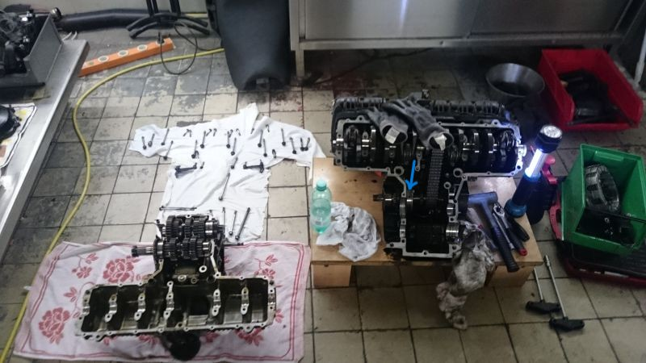
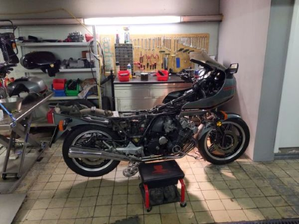

Der Lebenslauf des Motorrades beginnt für mich erst im Jahr 2008. Davor stand sie lange
Zeit abgemeldet in einer Garage.
Es benötigte schon einige Anstrengungen sie nach einer längeren Standzeit wieder zum Leben
zu erwecken.
Da ich am Anfang meines Berufslebens einige Zeit als Motorradmechaniker gearbeitet habe,
war die Ursache, verunreinigte Vergaser, schnell gefunden und durch eine komplette Überarbeitung
beseitigt.
Mit dem Kilometerstand von ca. 34.500 km starteten ich und meine "Dicke" unsere gemeinsame Zeit.
Viele schöne Touren und Reisen habe ich ohne größere Blessuren genossen. Der schnurrende
Sechszylinder hat auch viele Passanten begeistert.
Bei 61.000 km war leider ein Austausch des Anlasserfreilaufs notwendig.
Die Freilaufwalzen rutschen auf mehreren Fehlstellen durch und drehten den Motor nicht mehr durch.
Auf einen Kickstarter haben die Konstrukteure damals verzichtet. Für viel Geld war noch ein neuer
Freilauf bei eBay
zu erstehen.
Dafür musste der Motor geöffnet werden, der Freilauf liegt leider auf einer Getriebewelle
im Inneren des Motors (blauer Pfeil). Das dies nicht ohne eine Werkstatt zu
erledigen war versteht sich von selbst.


Leider ist damals mit der Abdichtung des Motors etwas schief gegangen. Beim Zusammenfügen der
Motorhälften müssen die Schaltgabeln exakt in die Führung der Zahnräder eingefädelt werden.
Dabei habe ich scheinbar ein wenig von dem Dichtmittel abgewischt, sodass ich den
Motor jetzt erneut öffnen muss um die Abdichtung wieder herzustellen.
Damit ergibt sich die Gelegenheit die vielen kleinen Blessuren an den Lackteilen durch eine
Neulackierung zu beseitigen.
Die Zierstreifen sind glücklicherweise weiterhin bei eBay zu bekommen. Nicht billig,
aber Spaß kostet eben!
Den exakten Farbton kann man heutzutage glücklicherweise mit einem Farbmeßgerät ermitteln,
ich bleibe gespannt.